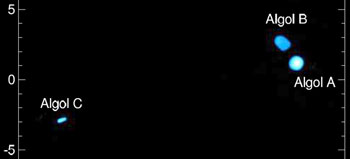

Algol (Beta Persei) is a triple star system in the constellation Perseus, about 94 light-years from Earth and the prototype of eclipsing binary variable stars. Every 2.87 days, its brightness drops from magnitude 2.12 to 3.4 as one star passes in front of the other, a change easily visible to the naked eye. The name comes from the Arabic ra’s al-ghūl, meaning "head of the demon", and in Greek mythology the star marks the severed head of Medusa held by Perseus.

Fabien Baron / University of Michigan / CHARA interferometer, CC BY-SA 3.0
{kind=link}
The system
Two stars form a close inner pair. The primary, Algol Aa1, is a hot blue-white B8 main-sequence star with about 3.17 solar masses and a surface temperature near 13,000 K. Its companion, Algol Aa2, is a cooler K0 subgiant of only 0.70 solar masses, yet it is physically larger (3.48 solar radii versus 2.73 for the primary) because it has expanded off the main sequence. A third star, Algol Ab, is an F1 main-sequence star of 1.76 solar masses that orbits the inner pair every 680 days.
The primary eclipse occurs when the cooler, dimmer subgiant crosses in front of the hotter primary, blocking much of its light. This lasts about 10 hours. A shallower secondary eclipse happens half an orbit later, when the primary passes in front of the subgiant, but the brightness drop is much smaller.
The Algol paradox
In normal stellar evolution, more massive stars evolve faster. Yet in the Algol system the less massive star (Aa2, 0.70 M☉) has already become a subgiant, while the heavier star (Aa1, 3.17 M☉) is still on the main sequence. This puzzling situation is called the Algol paradox.
The answer is mass transfer. Aa2 was originally the more massive star. As it evolved and expanded, it filled its Roche lobe and gas streamed across to its companion. So much material was transferred that the mass ratio reversed: the originally heavier star became the lighter one. This process is still ongoing, making Algol a semi-detached binary and the prototype for a whole class of mass-transfer systems called Algol variables (EA variables).
History
Italian astronomer Geminiano Montanari first recorded Algol's variability in 1667. In 1783, the English amateur astronomer John Goodricke, then just 17, measured the period and proposed that an unseen companion was periodically eclipsing the star. He received the Copley Medal for this work. In 1889, Hermann Carl Vogel at Potsdam Observatory detected periodic Doppler shifts in Algol's spectrum, confirming the binary nature and making Algol one of the first spectroscopic binaries ever identified.
In 2009, the CHARA interferometer at Mount Wilson Observatory produced the first spatially resolved image of the system, showing all three components as separate objects. More recently, a 2015 study by Finnish scholars (Lauri Jetsu and colleagues) identified a 2.85-day cycle in the Cairo Calendar, an ancient Egyptian document dating to roughly 1244–1163 BCE. If the match is correct, this would push the first observation of Algol's variability back over 3,000 years before Goodricke.